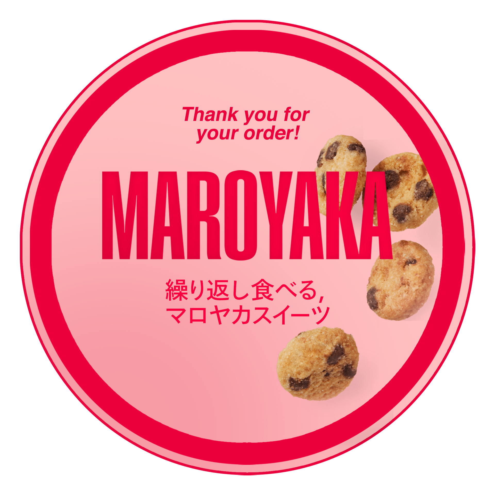

Maroyaka
Sucre Jar
April 22, 2022
“Satisfy your cravings at an affordable price”. Desserts such
cupcakes, cheesecakes, and other pastries are often expensive — and
yes, even in your local bake shops. Thus, we came up with producing
high-quality desserts that not only can satisfy your taste buds but
can also be bought at a reasonable price.
DEFINITION (Senakulo)
Formal Definition:
Senakulo (noun)
Senakulo is defined as a dramatic Lenten play that memorializes the
Passion of Jesus Christ and is commonly performed at least eight
nights during the events of Holy Week in the Philippines.
Informal Definition
Senakulo is also known as Cenaculo in Spanish and Passion Play in
English. It is a Filipino depiction of the life and death of Jesus
Christ.
Extended Definition
Senakulo is a renowned Christian tradition often performed from Palm
Sunday to Easter Sunday of the Holy Week. Senakulo can be performed on
the street, inside a chapel, or in an open area. It can also be
performed during Festivals. For instance, in Marinduque, Senakulo is
usually enacted during the Moriones Festival, in which performers wear
masks to portray the characters in a much more joyous manner.
Senakulo is very much similar to Pasyon as they both chronicle the
life and death of Jesus Christ. However, Pasyon is told mainly through
a piece of narrative consisting of five lines of stanzas with eight
syllables each. A Pabasa (“chanting”) is usually exercised during
Pasyon. On the other hand, Senakulo is more of a biblical reenactment
of the Passion of Christ and it does not feature Pabasa.
EXPLICATION (Line)
The Elements of Art - “Line”
Source
Matt Fussell described line as the most fundamental element of
drawing. He also viewed line as a point that moves on the surface of
the canvas. Line is oftentimes used to highlight the edges of the
subject, as well as to emphasize depth and replicate a reference. With
varying thickness and value, lines are capable of suggesting movement,
rhythm, and emotion. For instance, scribbled lines may convey anger,
whilst refined lines may convey calmness.
CLARIFICATION (Visual Arts)
Visual Arts is a form of art that involves the perception of sight
which can then be interpreted. It mainly focuses on the design and
visual representations which opens up a wide set of ideas, sometimes
with subsets. As an example, painting is a type of visual art that
focuses on applying paint to a surface to create art. It also has its
subsets which are: watercolor painting, oil painting, acrylic
painting, spray painting, finger painting, etc. To clarify, visual
arts are done by hand and not by technological means so it does not
include digital painting, photo manipulation, etc.
Output by:
BREQUILLO, Lean
BRINGUELO, Christine Joy
CAINGAT, Jethro
DEL ROSARIO, Katherine
JAVIER, Darryl
KADUSALE, Jan Edrian
MALLARI, Ivan Ashley
SALINAS, Julio Nico Jose